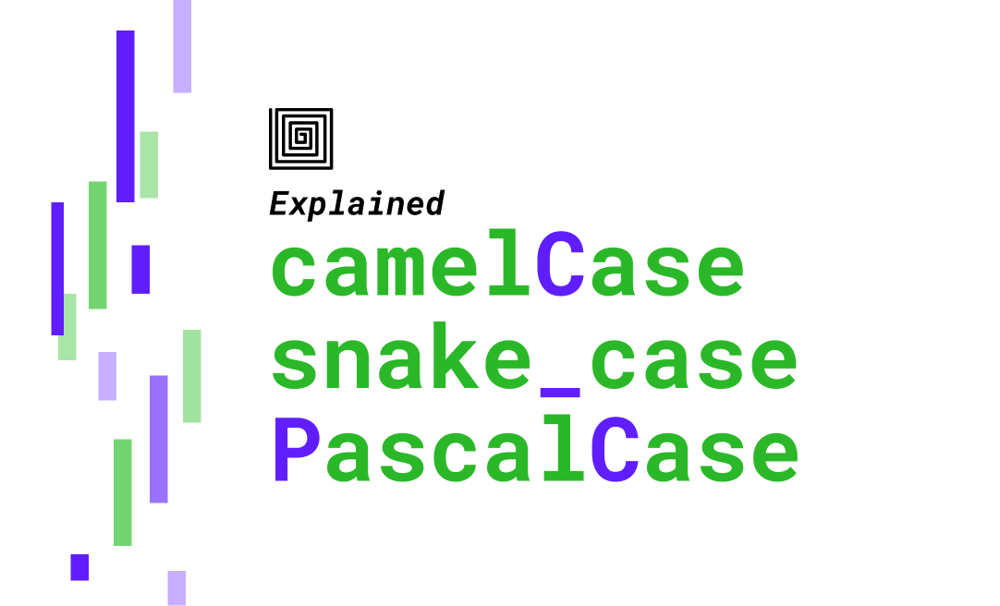

B ভাষার পূর্ববর্তী সংস্করণ ছিল BCPL (Basic Combined Programming Language)। BCPL ভাষাটি Martin Richards দ্বারা 1966 সালে তৈরি করা হয়েছিল।
BCPL এর বৈশিষ্ট্য:
BCPL একটি উচ্চ স্তরের প্রোগ্রামিং ভাষা ছিল যা মূলত কম্পাইলার এবং সিস্টেম প্রোগ্রামিং এর জন্য ব্যবহৃত হয়েছিল।
এটি B ভাষার ডিজাইনের জন্য একটি গুরুত্বপূর্ণ প্রভাব ফেলেছিল এবং C ভাষার পূর্বের ভিত্তি হিসেবে কাজ করেছে।
BCPL ভাষার ডিজাইন কিছু মৌলিক ধারণা প্রদান করেছিল যা B এবং পরবর্তীতে C ভাষার উন্নয়নে সহায়ক ছিল।
#include <stdio.h>
int main() {
return 0;
}
# = Preprocessor Directive
stdio.h (It is a header file)
(Standard Input Output Header)
এমন একটি ফাইল যার মধ্যে দরকারি অনেক Function বানানো থাকে।
printf();
যেকোনো Function Call করার Basic Syntax.
কমেন্ট (comment) হল একটি লাইন বা লাইনসমূহ যা কোডের মধ্যে যুক্ত করা হয়, তবে তা প্রোগ্রামের কার্যকারিতার উপর কোনো প্রভাব ফেলে না।
কমেন্ট শুধুমাত্র প্রোগ্রামারদের জন্য একটি নির্দেশিকা বা ব্যাখ্যা হিসেবে থাকে, যাতে কোডটি সহজে বোঝা যায়।
কম্পাইলার এই কমেন্টগুলোকে উপেক্ষা করে এবং প্রোগ্রাম থেকে বাদ দেয়।
//Single comment example
/* This is a multi-line comment example */
সিঙ্গেল কোটেশন শুধুমাত্র একক অক্ষর (char) সংরক্ষণের জন্য ব্যবহার করা হয়।
সিঙ্গেল কোটেশনের মধ্যে শুধু একটি অক্ষর থাকতে পারে, যেমন 'A', '1', '!', ইত্যাদি।
ডাবল কোটেশন ব্যবহার করা হয় স্ট্রিং লিটারাল (string literal) প্রকাশের জন্য, যা একাধিক অক্ষরের সমন্বয়ে গঠিত।
ডাবল কোটেশনের মধ্যে একাধিক অক্ষর থাকতে পারে, যেমন "Hello", "12345", "C programming" ইত্যাদি।
একক ক্যারেক্টার প্রকাশের জন্য single quotation ('A') ব্যবহার হয়।
স্ট্রিং বা একাধিক অক্ষরের সিকোয়েন্স প্রকাশের জন্য double quotation ("Hello") ব্যবহার হয়।
IDE বা Integrated Development Environment হলো একটি সফটওয়্যার অ্যাপ্লিকেশন, যা প্রোগ্রামারদের জন্য সফটওয়্যার ডেভেলপমেন্টের প্রয়োজনীয় সব টুল একসাথে সরবরাহ করে। এতে কোড লেখার জন্য এডিটর, কোডে ভুল ধরার জন্য ডিবাগার, এবং কোড কম্পাইল বা রান করার জন্য কম্পাইলার বা ইন্টারপ্রেটার ইত্যাদি থাকে।

ভ্যারিয়েবল (Variable) হলো একটি প্রোগ্রামিং ধারণা, যা প্রোগ্রামের মধ্যে ডেটা বা তথ্য সংরক্ষণ করার জন্য একটি নাম বা স্থানাধিকারী হিসেবে ব্যবহৃত হয়। ভ্যারিয়েবল একটি নির্দিষ্ট মান ধরে রাখতে পারে, এবং প্রোগ্রাম চলাকালীন সময়ে এই মান পরিবর্তনও হতে পারে। সহজভাবে বললে, ভ্যারিয়েবল হচ্ছে একটি পাত্র, যেখানে বিভিন্ন ধরণের মান (যেমন সংখ্যা, টেক্সট) রাখা যায় এবং প্রয়োজন অনুযায়ী সেটি ব্যবহার করা যায়।
দুটোই করা যায় তবে উত্তম হল Lower case.
১. অক্ষর দিয়ে শুরু করতে হবে: ভেরিয়েবলের নাম অবশ্যই একটি অক্ষর (a-z, A-Z) দিয়ে শুরু করতে হবে।
উদাহরণ: count, totalAmount, userName
২. আন্ডারস্কোর (_) ব্যবহার করা যেতে পারে: ভেরিয়েবলের নামের শুরুতে বা মধ্যে আন্ডারস্কোর (_) ব্যবহার করা যেতে পারে।
উদাহরণ: _tempValue, _result
৩. সংখ্যা প্রথমে ব্যবহার করা যাবে না: নামের প্রথমে সংখ্যা (0-9) দেওয়া যাবে না, তবে নামের অন্য কোথাও সংখ্যা ব্যবহার করা যেতে পারে।
সঠিক উদাহরণ: value1, count2
ভুল উদাহরণ: 1stValue, 200value
৪. বিশেষ চিহ্ন ব্যবহার এড়াতে হবে: নামের মধ্যে বিশেষ চিহ্ন যেমন @, #, $, %, &, * ইত্যাদি ব্যবহার করা যাবে না।
উদাহরণ: total_amount, userName
৫. নামকরণের কনভেনশন অনুসরণ করুন:
ক্যামেল কেস: প্রথম শব্দ ছোট এবং প্রতিটি পরবর্তী শব্দের প্রথম অক্ষর বড়।
উদাহরণ: totalAmount, userName
স্নেক কেস: সব শব্দ ছোট, এবং তাদের মাঝে আন্ডারস্কোর (_)।
উদাহরণ: total_amount, user_name
ভেরিয়েবলের সঠিক ও ভুল উদাহরণ:
সঠিক: userAge, totalScore, maxValue
ভুল: 123value, user-name, total$amount
সংরক্ষিত শব্দের ব্যবহার:
ভেরিয়েবলের নামকরণে সংরক্ষিত বা রিজার্ভড শব্দ (যেমন int, float, if, else) ব্যবহার করা যাবে না। এগুলো প্রোগ্রামিং ভাষার নির্দিষ্ট কাজের জন্য সংরক্ষিত থাকে।
সারসংক্ষেপ:
ভেরিয়েবলের নামের শুরুতে অক্ষর বা আন্ডারস্কোর ব্যবহার করা উচিত, সংখ্যার সাথে শুরু করা যাবে না, বিশেষ চিহ্নের ব্যবহার এড়িয়ে চলা উচিত, এবং নামের কনভেনশন (ক্যামেল কেস বা স্নেক কেস) অনুসরণ করা ভালো অভ্যাস।
সি প্রোগ্রামিংয়ে সংরক্ষিত শব্দ (Reserved Words) বলতে সেই বিশেষ শব্দগুলোকে বোঝানো হয়, যেগুলো ভাষার সিনট্যাক্সে পূর্বনির্ধারিত অর্থ বহন করে। এগুলোকে ভিন্ন অর্থে বা ভ্যারিয়েবল নাম হিসেবে ব্যবহার করা যায় না। যেমন: int, return, if, else ইত্যাদি।
auto double int struct
break else long switch
case enum register typedef
char extern return union
const float short unsigned
continue for signed void
default goto sizeof volatile
do if static while
1. ভাষার নিয়ম এবং সিনট্যাক্স:
রিজার্ভড ওয়ার্ডগুলো সি প্রোগ্রামিং ভাষার সিনট্যাক্সের অংশ, যেমন int, if, for, return ইত্যাদি। এগুলো নির্দিষ্ট কাজ সম্পাদনের জন্য সংরক্ষিত। যদি এগুলো ভেরিয়েবল হিসেবে ব্যবহার করা হয়, তাহলে কম্পাইলার এই শব্দগুলোকে সঠিকভাবে বুঝতে এবং প্রোগ্রামটি ঠিকভাবে কম্পাইল করতে পারবে না।
2. অস্পষ্টতা সৃষ্টি:
রিজার্ভড ওয়ার্ডগুলো বিশেষ নির্দেশের কাজ করে। যদি এগুলো ভেরিয়েবল হিসেবে ব্যবহার করা হয়, তাহলে কম্পাইলার জানবে না যে শব্দটি কোন অর্থে ব্যবহার করা হচ্ছে। যেমন, int শব্দটি ভেরিয়েবল হিসেবে ব্যবহার করলে কম্পাইলার বুঝবে না এটি ডাটা টাইপ নির্দেশ করছে নাকি সাধারণ ভেরিয়েবল হিসেবে ব্যবহার করা হচ্ছে।
3. কম্পাইলার এর কনফিউশন:
প্রতিটি রিজার্ভড ওয়ার্ডের একটি নির্দিষ্ট ভূমিকা থাকে, যেমন লুপ কন্ট্রোল, শর্ত পরীক্ষা, ডাটা টাইপ ইত্যাদি। ভেরিয়েবল হিসেবে এগুলো ব্যবহার করলে, কম্পাইলার সংশ্লিষ্ট কাজ করতে না পেরে ত্রুটি (error) দেখাবে।
উদাহরণ:
নিচের কোডটি ত্রুটি তৈরি করবে, কারণ এখানে int একটি রিজার্ভড ওয়ার্ড এবং ভেরিয়েবল হিসেবে ব্যবহার করা হয়েছে:
c
int int = 5; // এটি ভুল, কারণ 'int' একটি কীওয়ার্ড
এটি কম্পাইল করার সময়, কম্পাইলার একটি ত্রুটি প্রদর্শন করবে, কারণ int শব্দটি ইতিমধ্যে ডাটা টাইপ নির্দেশ করতে ব্যবহৃত হয় এবং ভেরিয়েবল হিসেবে এটি গ্রহণযোগ্য নয়।
রিজার্ভড ওয়ার্ডের কিছু উদাহরণ:
- int
- char
- if
- else
- for
- while
- return
উপসংহার:
সি প্রোগ্রামিং ভাষায় রিজার্ভড ওয়ার্ডগুলো ভাষার কাঠামো এবং কার্যক্রম পরিচালনার জন্য অপরিহার্য। এগুলো ভেরিয়েবল হিসেবে ব্যবহার করলে কম্পাইলার ত্রুটি তৈরি করবে এবং প্রোগ্রামটি সঠিকভাবে কাজ করবে না।
ভেরিয়েবল টাইপের কিছু উদাহরণ ও সংজ্ঞা:
1. int (পূর্ণসংখ্যা):
- এটি পূর্ণসংখ্যা বা ইন্টিজার মান ধারণ করে।
- উদাহরণ: int age = 25;
2. float (ভাসমান দশমিক সংখ্যা):
- এটি দশমিক সংখ্যা ধারণ করে যা ছোট আকারের ফ্লোটিং পয়েন্ট সংখ্যা সংরক্ষণ করতে ব্যবহৃত হয়।
- উদাহরণ: float price = 19.99;
3. double (দ্বিগুণ প্রান্তিকতা দশমিক সংখ্যা):
- এটি float এর চেয়ে অধিক নির্ভুল দশমিক সংখ্যা ধারণ করতে ব্যবহৃত হয়।
- উদাহরণ: double distance = 12345.6789;
4. char (একক অক্ষর):
- এটি একটি একক অক্ষর ধারণ করে।
- উদাহরণ: char grade = 'A';
5. string (স্ট্রিং বা টেক্সট):
- এটি একাধিক অক্ষরের সংমিশ্রণ বা টেক্সট ধারণ করে।
- উদাহরণ: string name = "Rakib Hasan";
6. boolean (বুলিয়ান):
- এটি true বা false মান ধারণ করে, যা সাধারণত লজিক্যাল কন্ডিশনের জন্য ব্যবহৃত হয়।
- উদাহরণ: boolean isStudent = true;
সংক্ষেপে:
- int: পূর্ণসংখ্যা (integer)।
- float ও double: দশমিক সংখ্যা।
- char: একক অক্ষর।
- string: একাধিক অক্ষর বা টেক্সট।
- boolean: true বা false মান।
প্রতিটি ভেরিয়েবল টাইপ নির্দিষ্ট ধরনের মান ধারণ করার জন্য প্রোগ্রামারদের সাহায্য করে, যাতে প্রোগ্রামটি সঠিকভাবে কাজ করতে পারে।
প্রাথমিক ডেটা টাইপ ও তাদের মেমোরি ধারণ ক্ষমতা:
1. int (পূর্ণসংখ্যা)*:
- সাইজ: ৪ বাইট (32 বিট)
- মানের পরিসর: -2,147,483,648 থেকে 2,147,483,647
2. float (দশমিক সংখ্যা):
- সাইজ: ৪ বাইট (32 বিট)
- মানের পরিসর: ৩.৪ × ১০^-৩৮ থেকে ৩.৪ × ১০^৩৮ (৭ ডিজিট পর্যন্ত নির্ভুল)
3. double (দশমিক সংখ্যা):
- সাইজ: ৮ বাইট (64 বিট)
- মানের পরিসর: ১.৭ × ১০^-৩০৮ থেকে ১.৭ × ১০^৩০৮ (১৫ ডিজিট পর্যন্ত নির্ভুল)
4. char (একক অক্ষর):
- সাইজ: ১ বাইট (8 বিট)
- মানের পরিসর: -128 থেকে 127 (সাইনড), 0 থেকে 255 (আনসাইনড)
5. boolean (বুলিয়ান):
- সাইজ: ১ বিট (তবে বিভিন্ন ভাষায় বাস্তবায়ন ভিন্ন হতে পারে)
- মান: true বা false
6. short (স্বল্প পূর্ণসংখ্যা)*:
- সাইজ: ২ বাইট (16 বিট)
- মানের পরিসর: -32,768 থেকে 32,767
7. long (দীর্ঘ পূর্ণসংখ্যা)*:
- সাইজ: ৮ বাইট (64 বিট)
- মানের পরিসর: -9,223,372,036,854,775,808 থেকে 9,223,372,036,854,775,807
8. long double (দীর্ঘ দশমিক সংখ্যা)*:
- সাইজ: সাধারণত ৮, ১২, বা ১৬ বাইট (96 বা 128 বিট, সিস্টেমের উপর নির্ভর করে)
- মানের পরিসর: বেশিরভাগ ক্ষেত্রে double এর চেয়ে বেশি নির্ভুলতা প্রদান করে।
সংক্ষেপে:
- 1 বাইট = 8 বিট
- int: 4 বাইট (32 বিট)
- float: 4 বাইট (32 বিট)
- double: 8 বাইট (64 বিট)
- char: 1 বাইট (8 বিট)
- boolean: 1 বিট (তবে সিস্টেম অনুসারে ভিন্ন হতে পারে)
- short: 2 বাইট (16 বিট)
- long: 8 বাইট (64 বিট)
- long double: ৮, ১২, বা ১৬ বাইট (সিস্টেমের উপর নির্ভরশীল)
ভেরিয়েবল টাইপ অনুযায়ী মেমোরির আকার ও মানের পরিসর নির্ভর করে ডেটার ধরনের উপর, এবং বিভিন্ন সিস্টেম ও প্রোগ্রামিং ভাষায় এর আকার কিছুটা ভিন্ন হতে পারে।
float এবং double হলো দুই ধরনের ডেটা টাইপ, যা দশমিক সংখ্যা বা ফ্লোটিং পয়েন্ট সংখ্যা ধারণ করতে ব্যবহৃত হয়।
তবে এই দুইয়ের মধ্যে কিছু মৌলিক পার্থক্য রয়েছে, যা তাদের ভিন্ন ভিন্ন প্রয়োগের ক্ষেত্রে নির্ধারণ করে।
পার্থক্য:
1. স্টোরেজ সাইজ:
- float: সাধারণত ৪ বাইট মেমোরি ব্যবহার করে।
- double: সাধারণত ৮ বাইট মেমোরি ব্যবহার করে, যা float এর চেয়ে দ্বিগুণ।
2. নির্ভুলতা (Precision):
- float: এটি ৭ সংখ্যার নির্ভুলতা (Precision) পর্যন্ত ধারণ করতে পারে। মানে, ৭ ডিজিট পর্যন্ত সঠিক থাকবে।
- double: এটি ১৫ সংখ্যার নির্ভুলতা পর্যন্ত ধারণ করতে পারে, যা আরও নির্ভুল ফলাফল প্রদান করে।
3. মানের ব্যাপ্তি (Range):
- float: এটি তুলনামূলকভাবে ছোট পরিসরের মান ধারণ করতে পারে।
- double: এটি অনেক বড় পরিসরের দশমিক সংখ্যা ধারণ করতে সক্ষম।
4. গাণিতিক ক্রিয়াকলাপের গতি (Speed):
- float: যেহেতু এটি কম মেমোরি ব্যবহার করে এবং কম নির্ভুলতা সহ কাজ করে, তাই এটি দ্রুততর হতে পারে।
- double: এটি বেশি মেমোরি ব্যবহার করে এবং বেশি নির্ভুলতা সহ কাজ করে, তাই এটি তুলনামূলকভাবে ধীর হতে পারে।
কখন কোনটি ব্যবহার করা হবে:
1. *float ব্যবহার করার সময়:
- যখন মেমোরি সীমাবদ্ধ থাকে।
- যখন কম নির্ভুলতা মেনে নেয়া যেতে পারে, যেমন গ্রাফিক্স প্রোগ্রামিং, কম্পিউটার গেমস, বা ভিজ্যুয়ালাইজেশন টুলস ইত্যাদিতে।
- ছোট পরিসরের দশমিক সংখ্যা সংরক্ষণ করতে হলে।
উদাহরণ:
c
float price = 19.99f;
2. double ব্যবহার করার সময়:
- যখন বেশি নির্ভুলতা প্রয়োজন, যেমন বৈজ্ঞানিক গণনা, ফিনান্সিয়াল অ্যাপ্লিকেশন বা গাণিতিক ক্রিয়া ইত্যাদিতে।
- বড় পরিসরের সংখ্যা সংরক্ষণ করতে হলে।
- যখন গাণিতিক ফলাফলের মধ্যে ছোট ছোট পার্থক্য গুরুত্বপূর্ণ হয়।
উদাহরণ:
c
double distance = 12345.6789;
সংক্ষেপে:
- float হল ছোট মান এবং কম নির্ভুলতার জন্য, যেখানে মেমোরি গুরুত্বপূর্ণ।
- double হল বড় মান এবং বেশি নির্ভুলতার জন্য, যেখানে নির্ভুলতা বেশি গুরুত্বপূর্ণ।
int a = 123; এই লাইনে বিভিন্ন অংশের নাম নিম্নরূপ:
1. int: এটি ডেটা টাইপ বা ভেরিয়েবল টাইপ। এখানে int অর্থে এটি একটি পূর্ণসংখ্যা নির্দেশ করে।
2. a: এটি ভেরিয়েবল নেম। এটি সেই নাম যা দিয়ে ভেরিয়েবলকে শনাক্ত করা হয়।
3. =: এটি অ্যাসাইনমেন্ট অপারেটর। এটি ডান পাশের মানকে বাম পাশের ভেরিয়েবলে সংরক্ষণ করে।
4. 123: এটি ভ্যালু বা মান, যা ভেরিয়েবল a তে সংরক্ষণ করা হবে।
পূর্ণ লাইনের অর্থ: একটি int টাইপ ভেরিয়েবল a ডিক্লেয়ার করা হয়েছে এবং এতে 123 মানটি সংরক্ষিত হয়েছে।
উল্লিখিত কোডে, a হলো ভেরিয়েবল, এবং এটিকেই মেইন ভেরিয়েবল* বলা হয়। এটি সেই ভেরিয়েবল, যেখানে মান 123 সংরক্ষণ করা হয়েছে।ভেরিয়েবল টাইপ হচ্ছে সেই ডেটা টাইপ যা ভেরিয়েবলে সংরক্ষিত মানের ধরণ বা ধরনের নির্দেশ করে। বিভিন্ন প্রোগ্রামিং ভাষায় ভেরিয়েবল টাইপের সাহায্যে প্রোগ্রামকে জানানো হয় যে, ভেরিয়েবলে কী ধরনের মান (যেমন সংখ্যা, অক্ষর, দশমিক ইত্যাদি) রাখা হবে।
সংখ্যাসূচক ভেরিয়েবল (Numerical Variable):
সংখ্যাসূচক ভেরিয়েবল এমন ভেরিয়েবল যা সংখ্যা ধরে রাখতে ব্যবহৃত হয়। এর মধ্যে রয়েছে int, float, double ইত্যাদি।
#include
int main() {
int a = 10; // পূর্ণসংখ্যা (Integer)
float b = 3.14; // ভগ্নাংশ সংখ্যা (Floating point number)
double c = 3.14159; // আরও নির্ভুল ভগ্নাংশ সংখ্যা (Double precision)
printf("a এর মান: %d\n", a);
printf("b এর মান: %f\n", b);
printf("c এর মান: %lf\n", c);
return 0;
}
অক্ষর ভেরিয়েবল (Character Variable):
অক্ষর ভেরিয়েবল এমন ভেরিয়েবল যা একটি ক্যারেক্টার (একক অক্ষর) ধরে রাখতে ব্যবহৃত হয়।
এর জন্য char ডেটা টাইপ ব্যবহার করা হয়।
#include
int main() {
char ch = 'A'; // একটি ক্যারেক্টার
printf("ch এর মান: %c\n", ch);
return 0;
}
মূল পয়েন্ট:
সংখ্যাসূচক ভেরিয়েবল: পূর্ণসংখ্যা এবং ভগ্নাংশ সংখ্যা সংরক্ষণ করতে ব্যবহৃত হয় (যেমন int, float ইত্যাদি)।
অক্ষর ভেরিয়েবল: একক অক্ষর সংরক্ষণ করতে ব্যবহৃত হয় (char)।
Constant Variable হল এমন একটি ভেরিয়েবল যার মান পরিবর্তন করা যায় না।
সাধারণত, `const` কীওয়ার্ড ব্যবহার করে একটি ভেরিয়েবলকে কনস্ট্যান্ট হিসেবে ঘোষণা করা হয়।
একবার মান নির্ধারণ হয়ে গেলে, তা আর পরিবর্তন করা সম্ভব নয়।
Example
লোকাল ভেরিয়েবল হল এমন ভেরিয়েবল যা কোনো নির্দিষ্ট ফাংশন এর মধ্যে ডিক্লেয়ার করা হয়।
এই ভেরিয়েবলগুলির স্কোপ (সীমা) শুধুমাত্র সেই ব্লকের ভেতরে সীমাবদ্ধ থাকে যেখানে এগুলি ডিক্লেয়ার করা হয়েছে। ফাংশনের বাইরে এগুলিকে ব্যবহার করা যায় না।
গ্লোবাল ভেরিয়েবল হল এমন ভেরিয়েবল যা প্রোগ্রামের ফাংশনগুলির বাইরে, সাধারণত প্রোগ্রামের শুরুতে ডিক্লেয়ার করা হয়। গ্লোবাল ভেরিয়েবল পুরো প্রোগ্রামের মধ্যে যেকোনো ফাংশন থেকে অ্যাক্সেস করা যায়।
#include
int main() {
int a = 10; // লোকাল ভেরিয়েবল
printf("a এর মান: %d\n", a);
return 0;
}
#include
int b = 20; // গ্লোবাল ভেরিয়েবল
int main() {
printf("b এর মান: %d\n", b);
return 0;
}
সংরক্ষিত শব্দ বলতে কি বুঝ ?
1 number সঠিক চলক নয় ব্যাখ্যা কর ?
চলকের নামে আন্ডারস্কোর ব্যবহার করা যায় ব্যাখ্যা কর ?
চলকের নামকরণের সময় কিছু নিয়ম মেনে চলতে হয় ব্যাখ্যা কর ?